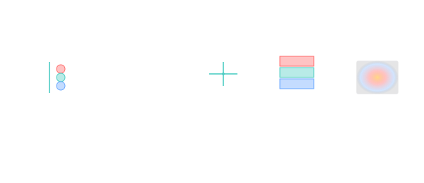

Space photography
Every famous "telescope picture" is a stack of long exposures through narrow-band filters, calibrated, registered, false-colour mapped — the image is what humans make of the count.

101 · zoom in
Hubble didn't take a photo of the Pillars of Creation. Hubble took a few dozen photos — each through a different filter, each minutes long — and a team of imaging scientists stacked them, aligned them sub-pixel, calibrated out the bad pixels and cosmic-ray hits, then assigned colours by what physics the filter captured. The thing you see on the poster is real data and real interpretation, in equal parts. Telescope imagery isn't dishonest — it's just not what your phone camera does.
Below this section the Observatory Showcase strip pulls one signature image from each of the twelve observatories in Orrery's fleet — Hubble, JWST, Chandra, Spitzer, Kepler, TESS, Gaia, Euclid, XMM-Newton, Spektr-RG, Compton GRO, and Hitomi. Click any of them to drop into that observatory's full gallery + technical panel.
A space telescope's image sensor is a CCD or CMOS chip — a grid of photon-counters. Each pixel sits on the focal plane for an exposure (anywhere from milliseconds to multiple hours), accumulating electron counts. The output is a number per pixel: how many photons of which narrow-band filter hit there. Multiple exposures are stacked to beat down read noise, registered to sub-pixel alignment, and median-combined to reject cosmic-ray hits.
Colour is the most-misunderstood part. Telescope filters are narrow-band — they pass a specific 10–100 nm slice of the spectrum: hydrogen-alpha at 656.3 nm, doubly-ionised oxygen at 500.7 nm, infrared bands at 2 µm or 12 µm. The Hubble Palette assigns those filters to RGB channels in non-physical ways (S-II red, H-α green, O-III blue) to maximise contrast between physical processes. JWST's mid-infrared images map 21 µm, 11 µm, and 7 µm to RGB — colours your eye couldn't see if you were there.
The processing pipeline is open-source for most NASA / ESA observatories. Raw exposures land in MAST (Mikulski Archive for Space Telescopes) or ESA Datalabs the moment they hit the ground; image-pipeline tutorials show exactly how a final composite is assembled. The pictures aren't manufactured — they're documented to the byte.
For ground-based imaging the additional challenge is the atmosphere. [Adaptive optics](observation/adaptive-optics) corrects it in real time by sensing the turbulence with a laser guide star and counter-bending a deformable mirror. JWST and Hubble are in space partly to skip this problem entirely; the atmosphere is also opaque at most infrared and UV bands, which is the other reason.

The actual telescopes
One signature image per observatory in Orrery's fleet — click any to drop into that observatory's full gallery + technical panel. Listed by first-flight date, so the strip reads as a timeline of how our cosmic vision has expanded.
Loading observatory imagery…